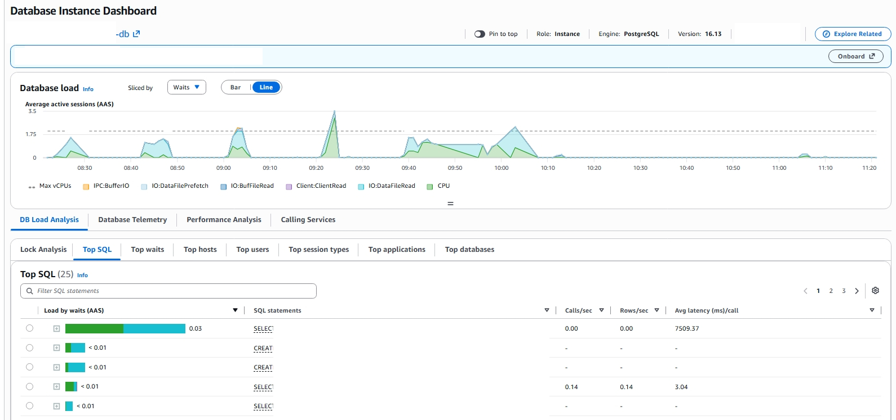

partial 인덱스 seq scan 인시던트
DB CPU가 낮은데도 태스크가 15분마다 재시작되던 장애를 wait event로 추적했다. partial 인덱스의 함정을 찾아 인덱스 하나로 해결한 실전 기록이다.
증상
- 운영 중인 클라우드 비용 리포팅 서비스가 전반적으로 느려짐
- 주기적으로 도는 배치(이상탐지) 처리가 계속 실패
- 웹 컨테이너(태스크)가 대략 15분 주기로 반복 재시작
- 약 3일간 아무 알람 없이 방치됨 (탐지 공백)
DB CPU Usage가 높을 줄 알았다
증상이 "커넥션이 막힌 것"처럼 보여서 처음에는 커넥션 풀 고갈을 의심했다. 커넥션이 막힌다면 보통 DB가 바쁠 때다. 그런데 지표를 다시 보니 DB CPU가 12% 남짓이었다.
| 확인 지점 | 관찰 | 해석 |
|---|---|---|
| DB CPU | 약 12% | 자원 포화 아님 → 부하 문제 아님 |
| 커넥션 | 막힘 | 특정 쿼리가 장시간 점유 의심 |
| Slow Query 로그 | 한 쿼리가 46초+ (큰 대상은 150초+) | 원인 후보 확정 |
| EXPLAIN | Seq Scan |
인덱스를 못 타고 테이블 풀스캔 |
Performance Insights와 wait event
Slow Query 로그가 후보를 좁혀 줬다면, 원인을 확정한 건 RDS Performance Insights였다.

RDS Performance Insights. Database load(AAS)를 wait event로 쪼갠 그래프(위)와 Top SQL(아래). 15분 간격 스파이크가 파란 IO:DataFileRead로 차오르고, 부하 1위 쿼리의 평균 지연이 7,509ms다.
Database load(평균 활성 세션, AAS) 를 wait event로 쪼개 보면 그림이 선명해진다. 평소 0에 가깝다가 15분 간격으로 규칙적인 스파이크가 솟고, 큰 스파이크는 Max vCPUs 선(약 1.75)을 넘겨 3.5까지 치솟았다. AAS가 vCPU 수를 넘었다는 건 세션이 CPU를 다 쓴 게 아니라 무언가를 기다리며 쌓였다는 뜻이다.
스파이크 구간의 wait은 초록색 CPU가 아니라 파란색 IO:DataFileRead 로 채워져 있었다. 여기서 원인이 좁혀졌다.
인덱스로 몇 페이지만 집어오는 쿼리라면 IO:DataFileRead가 이만큼 크게 나올 수 없다. 테이블 데이터 파일을 디스크에서 통째로 읽고 있다는 뜻, 곧 seq scan이 남기는 전형적 신호다.
Top SQL을 부하순으로 정렬하니 1위가 곧장 드러났다. 한 쿼리가 평균 7,509ms/call로 부하를 독식하고 있었다(나머지는 3ms 안팎). Slow Query 로그의 "최대 46초"는 데이터가 많은 큰 그룹에서 나온 최댓값이었고, 이 쿼리는 평균만 7.5초여도 15분마다 강제로 도니 랭킹 최상단을 놓지 않았다. 같은 목록엔 조치로 돌린 CREATE INDEX CONCURRENTLY도 함께 잡혀 있었다.
진짜 원인: partial 인덱스를 못 타는 쿼리
문제의 쿼리는 15분마다 도는 이상탐지 잡이 실행하는 것으로, 그룹의 대표 통화(dominant currency)를 찾는 쿼리였다. 통화별로 합계를 내야 하니 currency를 필터하지 않는다.
그런데 이 집계 테이블에 걸린 인덱스는 전부 WHERE currency = 'USD' partial(부분) 인덱스였다.
-- 집계 테이블에 있던 인덱스는 전부 partial (USD 전용)
CREATE INDEX idx_daily_cost_usd
ON daily_cost_agg (group_id, usage_date)
WHERE currency = 'USD'; -- ← 부분 조건
-- 대표 통화를 찾는 쿼리는 currency를 필터하지 않는다
SELECT currency, SUM(amount)
FROM daily_cost_agg
WHERE group_id = :group_id
GROUP BY currency; -- ← WHERE에 currency 없음
핵심은 이것이다. partial 인덱스는 쿼리의 predicate가 인덱스의 부분 조건을 포함한다고 플래너가 증명할 수 있을 때만 쓰인다. 위 쿼리에는 currency = 'USD' 조건이 없으니(있으면 안 되는 게 맞다) 플래너는 이 인덱스를 후보에서 제외하고, 다른 인덱스도 없으니 테이블 전체 seq scan으로 떨어진다.
EXPLAIN 결과 (before)
Seq Scan on daily_cost_agg (rows=수백만)
Filter: (group_id = :group_id)
→ 실측 46초 이상
이 잡은 웹(uvicorn) 프로세스의 이벤트 루프에서 도는 인프로세스 스케줄러(APScheduler) 잡이었다. 즉 46초짜리 쿼리가 도는 동안 그 워커가 붙잡힌다. 그 사이 로드밸런서의 헬스체크(/health/ready, 3초 안에 SELECT 1)가 응답을 못 받아 503이 나고, 로드밸런서는 태스크를 비정상으로 판정해 죽이고 새로 띄운다. 그리고 새 태스크에서 잡이 또 돌면서 같은 일이 반복된다.
flowchart TD
A[15분 주기 이상탐지 잡 실행] --> B[통화 미필터 쿼리<br/>partial 인덱스 사용 불가]
B --> C[집계 테이블 전체 seq scan<br/>46초 이상]
C --> D[웹 이벤트 루프의 워커를 장시간 점유]
D --> E["/health/ready 3초 내<br/>SELECT 1 실패 → 503"]
E --> F[로드밸런서 비정상 판정<br/>태스크 종료 후 재기동]
F --> A조치
부분 조건과 무관하게 (group_id, usage_date)로 대상을 좁히는 full 인덱스를 추가했다. partial이 아니므로 통화 필터가 없는 쿼리도 탈 수 있다.
-- predicate에 currency가 없어도 group_id로 바로 좁히는 full 인덱스
CREATE INDEX IF NOT EXISTS idx_daily_cost_group_date
ON daily_cost_agg (group_id, usage_date);
장애 대응 중에는 손으로 먼저 인덱스를 만들어 급한 불을 껐고, 이후 같은 CREATE INDEX IF NOT EXISTS 문을 마이그레이션 파일에도 넣어 스키마에 영구히 남겼다. 이미 인덱스가 있는 상태에서 마이그레이션이 다시 실행돼도 IF NOT EXISTS 덕분에 아무 것도 하지 않고 넘어가므로(중복 생성 오류 없음) 안전하다.
검증
EXPLAIN 결과 (after)
Index Scan using idx_daily_cost_group_date on daily_cost_agg
Index Cond: (group_id = :group_id)
→ 46초 → 1ms
- 문제 쿼리: 46초 → 1ms
- 라이브에서 이상탐지 잡이 전체 대상을 432ms에 완료
- 태스크가 잡 주기를 넘겨 살아남음 → 헬스체크 실패 0회
- 잡이 완료 기록(
last_run_date)을 남겨 같은 주기 재실행을 스스로 건너뜀
"느리다"의 진짜 원인은 대개 자원 포화가 아니라 특정 쿼리다. DB CPU가 낮은데 커넥션이 막힌다면 Slow Query 로그부터 본다. partial 인덱스는 강력하지만 쿼리 predicate가 인덱스의 부분 조건을 벗어나는 순간 seq scan으로 떨어지므로, 새 조회 경로는 EXPLAIN으로 실제 인덱스를 타는지 확인하고 쓴다.